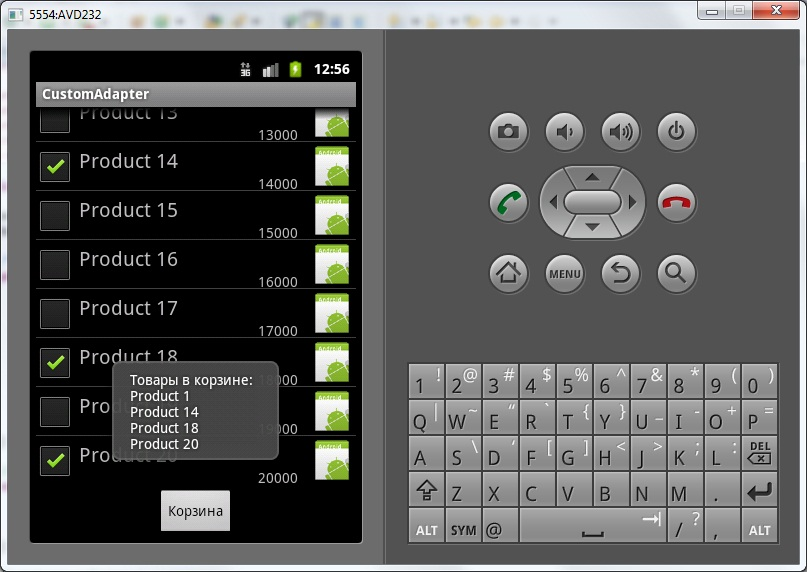

В этом уроке:
- создаем свой адаптер на основе BaseAdapter
Предоставляемые нам адаптеры универсальны и полезны, но иногда их возможностей не хватает для реализации задуманного. Тогда возникает необходимость написать свой адаптер. Попробуем и мы. Создавать будем не с нуля, а используя BaseAdapter.
Сделаем подобие интернет магазина. Будем выводить список товаров. Каждый пункт списка будет содержать название товара, цену и изображение. Также будет возможность отметить пункт галкой, поместив его тем самым в корзину.
Внизу списка сделаем кнопку, которая будет отображать содержимое корзины. В настоящем интернет-магазине мы повесили бы на нее, например, переход к созданию заказа.
Создадим проект:
Project name: P0541_CustomAdapter
Build Target: Android 4.0
Application name: CustomAdapter
Package name: ru.startandroid.develop.p0541customadapter
Create Activity: MainActivity
В файл strings.xml добавим текстовый параметр для названия кнопки.
<string name="box">Корзина</string>Экран main.xml:
<?xml version="1.0" encoding="utf-8"?>
<LinearLayout
xmlns:android="http://schemas.android.com/apk/res/android"
android:layout_width="fill_parent"
android:layout_height="fill_parent"
android:orientation="vertical">
<ListView
android:id="@+id/lvMain"
android:layout_width="match_parent"
android:layout_height="match_parent"
android:layout_weight="1">
</ListView>
<Button
android:layout_width="wrap_content"
android:layout_height="wrap_content"
android:layout_gravity="center_horizontal"
android:layout_marginTop="5dp"
android:onClick="showResult"
android:text="@string/box">
</Button>
</LinearLayout>layout для пункта списка – item.xml:
<?xml version="1.0" encoding="utf-8"?>
<LinearLayout
xmlns:android="http://schemas.android.com/apk/res/android"
android:layout_width="match_parent"
android:layout_height="wrap_content"
android:orientation="horizontal">
<CheckBox
android:id="@+id/cbBox"
android:layout_width="wrap_content"
android:layout_height="wrap_content">
</CheckBox>
<LinearLayout
android:id="@+id/linearLayout1"
android:layout_width="match_parent"
android:layout_height="match_parent"
android:layout_marginLeft="5dp"
android:layout_weight="1"
android:orientation="vertical">
<TextView
android:id="@+id/tvDescr"
android:layout_width="wrap_content"
android:layout_height="wrap_content"
android:layout_marginTop="5dp"
android:text=""
android:textSize="20sp">
</TextView>
<TextView
android:id="@+id/tvPrice"
android:layout_width="wrap_content"
android:layout_height="wrap_content"
android:layout_gravity="right"
android:layout_marginRight="10dp"
android:text="">
</TextView>
</LinearLayout>
<ImageView
android:id="@+id/ivImage"
android:layout_width="wrap_content"
android:layout_height="wrap_content"
android:src="@drawable/ic_launcher">
</ImageView>
</LinearLayout>Чекбокс, пара текстовых полей и картинка.
Теперь пишем код. Можно все написать в MainActivity.java, но тогда он получится достаточно большим и неудобным для чтения. Я раскидаю весь код по трем классам.
Product.java – класс, описывающий товар:
package ru.startandroid.develop.p0541customadapter;
public class Product {
String name;
int price;
int image;
boolean box;
Product(String _describe, int _price, int _image, boolean _box) {
name = _describe;
price = _price;
image = _image;
box = _box;
}
}Тут все просто – только конструктор и элементы класса. Не заморачиваюсь с доступом и методами Set/Get, чтобы не усложнять код.
BoxAdapter.java – созданный адаптер, который будем использовать
package ru.startandroid.develop.p0541customadapter;
import java.util.ArrayList;
import android.content.Context;
import android.view.LayoutInflater;
import android.view.View;
import android.view.ViewGroup;
import android.widget.BaseAdapter;
import android.widget.CheckBox;
import android.widget.CompoundButton;
import android.widget.CompoundButton.OnCheckedChangeListener;
import android.widget.ImageView;
import android.widget.TextView;
public class BoxAdapter extends BaseAdapter {
Context ctx;
LayoutInflater lInflater;
ArrayList<Product> objects;
BoxAdapter(Context context, ArrayList<Product> products) {
ctx = context;
objects = products;
lInflater = (LayoutInflater) ctx
.getSystemService(Context.LAYOUT_INFLATER_SERVICE);
}
// кол-во элементов
@Override
public int getCount() {
return objects.size();
}
// элемент по позиции
@Override
public Object getItem(int position) {
return objects.get(position);
}
// id по позиции
@Override
public long getItemId(int position) {
return position;
}
// пункт списка
@Override
public View getView(int position, View convertView, ViewGroup parent) {
// используем созданные, но не используемые view
View view = convertView;
if (view == null) {
view = lInflater.inflate(R.layout.item, parent, false);
}
Product p = getProduct(position);
// заполняем View в пункте списка данными из товаров: наименование, цена
// и картинка
((TextView) view.findViewById(R.id.tvDescr)).setText(p.name);
((TextView) view.findViewById(R.id.tvPrice)).setText(p.price + "");
((ImageView) view.findViewById(R.id.ivImage)).setImageResource(p.image);
CheckBox cbBuy = (CheckBox) view.findViewById(R.id.cbBox);
// присваиваем чекбоксу обработчик
cbBuy.setOnCheckedChangeListener(myCheckChangeList);
// пишем позицию
cbBuy.setTag(position);
// заполняем данными из товаров: в корзине или нет
cbBuy.setChecked(p.box);
return view;
}
// товар по позиции
Product getProduct(int position) {
return ((Product) getItem(position));
}
// содержимое корзины
ArrayList<Product> getBox() {
ArrayList<Product> box = new ArrayList<Product>();
for (Product p : objects) {
// если в корзине
if (p.box)
box.add(p);
}
return box;
}
// обработчик для чекбоксов
OnCheckedChangeListener myCheckChangeList = new OnCheckedChangeListener() {
public void onCheckedChanged(CompoundButton buttonView,
boolean isChecked) {
// меняем данные товара (в корзине или нет)
getProduct((Integer) buttonView.getTag()).box = isChecked;
}
};
}На всякий случай напомню общий принцип действия адаптера: он получает данные и выдает View для отображения пункта списка.
Смотрим код. В конструкторе мы заполняем наши внутренние переменные и получаем LayoutInflater для работы с layout-ресурсами. В objects у нас теперь хранится список товаров, которые надо отобразить в списке.
Методы, отмеченные аннотацией @Override, мы обязаны реализовать при наследовании BaseAdapter. Эти методы используются списком и должны работать корректно.
Метод getCount должен возвращать кол-во элементов. Мы возвращаем кол-во товаров.
Метод getItem должен возвращать элемент по указанной позиции. Используя позицию, получаем конкретный элемент из objects.
Метод getItemId должен возвращать id элемента. Здесь не заморачиваемся и возвращаем позицию. Кстати, также сделано в некоторых адаптерах. Поэтому мы и видели в обработчиках, что id = position.
Метод getView должен возвращать View пункта списка. Для этого мы создавали layout-ресурс R.layout.item. В этом методе мы должны из R.layout.item создать View, заполнить его данными и отдать списку. Но перед тем как создавать, мы пробуем использовать convertView, который идет на вход метода. Это уже созданное ранее View, но неиспользуемое в данный момент. Например, при прокрутке списка, часть пунктов уходит за экран и их уже не надо прорисовывать. View из этих «невидимых» пунктов используются для новых пунктов. Нам остается только заполнить их данными. Это значительно ускоряет работу приложения, т.к. не надо прогонять inflate лишний раз.
Если же convertView в этот раз нам не дали (null), то создаем сами view. Далее заполняем наименования, цену и картинку из данных по товарам. Для чекбокса мы присваиваем обработчик, сохраняем в Tag позицию элемента и ставим галку, если товар уже в корзине.
Tag – это некое Object-хранилище у каждого View, куда вы можете поместить нужные вам данные. В нашем случае я для каждого чекбокса помещаю в его Tag номер позиции пункта списка. Далее в обработчике чекбокса я смогу этот номер позиции извлечь и определить, в каком пункте списка был нажат чекбокс.
В итоге, метод getView возвращает списку полностью заполненное view, и список его отобразит как очередной пункт.
Далее идет пара методов, которые не обязательно было создавать при наследовании BaseAdapter. Я их создал для удобства.
Метод getProduct – это аналог getItem, но он сразу конвертирует Object в Product. Он используется всего пару раз. И в принципе, можно было бы и без него обойтись.
Метод getBox проверяет, какие товары отмечены галками и формирует из них коллекцию-корзину.
myCheckChangeList – обработчик для чекбоксов. Когда мы нажимаем на чекбокс в списке, он срабатывает, читает из Tag позицию пункта списка и помечает соответствующий товар, как положенный в корзину.
Тут важно понимать, что без этого обработчика не работало бы помещение товаров в корзину. Да и на экране - значения чекбоксов в списке терялись бы при прокрутке. Потому что пункты списка пересоздаются, если они уйдут «за экран» и снова появятся. Это пересоздание обеспечивает метод getView, а он для заполнения View берет данные из товаров. Значит при нажатии на чекбокс, обязательно надо сохранить в данных о товаре то, что он теперь в корзине.
MainActivity.java:
package ru.startandroid.develop.p0541customadapter;
import java.util.ArrayList;
import android.app.Activity;
import android.os.Bundle;
import android.view.View;
import android.widget.ListView;
import android.widget.Toast;
public class MainActivity extends Activity {
ArrayList<Product> products = new ArrayList<Product>();
BoxAdapter boxAdapter;
/** Called when the activity is first created. */
public void onCreate(Bundle savedInstanceState) {
super.onCreate(savedInstanceState);
setContentView(R.layout.main);
// создаем адаптер
fillData();
boxAdapter = new BoxAdapter(this, products);
// настраиваем список
ListView lvMain = (ListView) findViewById(R.id.lvMain);
lvMain.setAdapter(boxAdapter);
}
// генерируем данные для адаптера
void fillData() {
for (int i = 1; i <= 20; i++) {
products.add(new Product("Product " + i, i * 1000,
R.drawable.ic_launcher, false));
}
}
// выводим информацию о корзине
public void showResult(View v) {
String result = "Товары в корзине:";
for (Product p : boxAdapter.getBox()) {
if (p.box)
result += "\n" + p.name;
}
Toast.makeText(this, result, Toast.LENGTH_LONG).show();
}
}Тут кода совсем мало.
В onCreate создаем адаптер и список.
В методе fillData генерируем данные для адаптера. В качестве картинки используем стандартную для всех пунктов. В идеале, для каждого товара своя картинка.
Метод showResult получает из адаптера список товаров корзины и выводит их наименования. Этот метод вызывается по нажатию кнопки на экране, т.к. прописан в ее свойстве onClick.
Все сохраняем и запускаем. Отмечаем товары и жмем кнопку для просмотра содержимого корзины.

Достаточно непростой получился пример из-за чекбокса.
Вполне может быть, что есть другой способ реализации этого примера. Но смысл был в том, чтобы показать создание своего адаптера. Для закрепления темы посмотрите еще этот пример от Google.